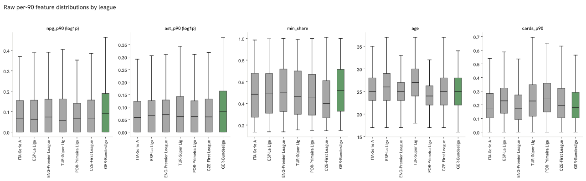
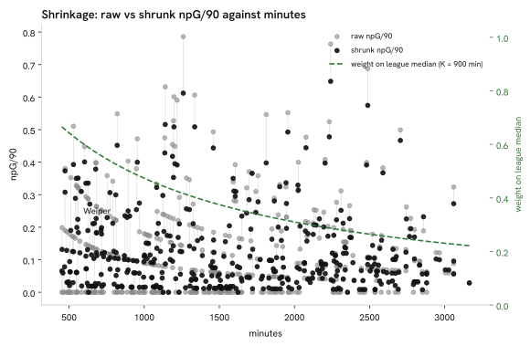
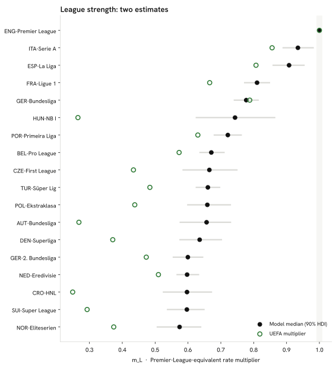
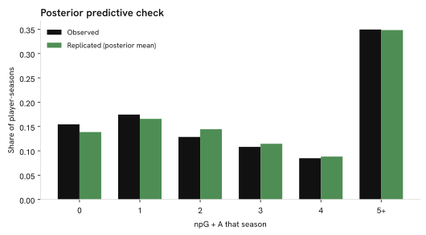
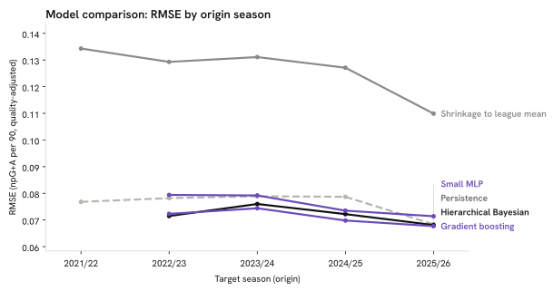
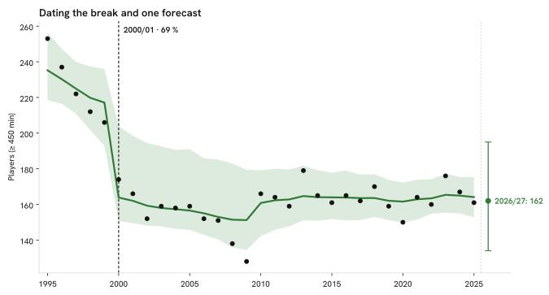
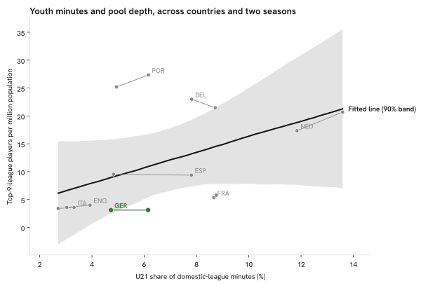
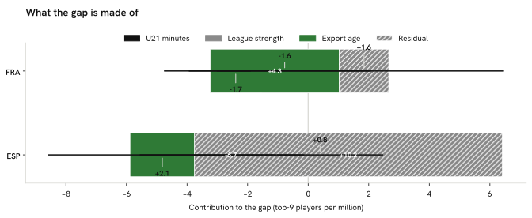
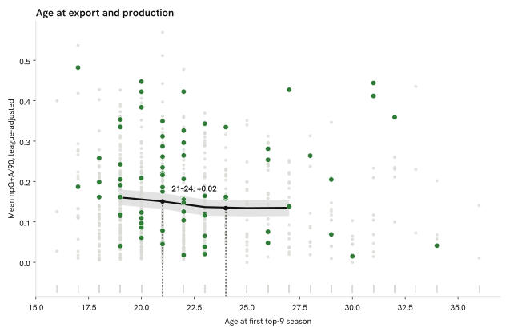

Methodology, data and limitations
Data sources
- FBref (Sports Reference), read with
soccerdata1.9.1: player season tables (standard, playing time) for the 9 headline leagues, the Bundesliga, the peer domestic leagues and the German second tier; the country page "Players from Germany" for pool discovery; the nationality column for peer counts. Season tables fetched 14 September 2026; the Big-5 history back to 1995/96 is in the snapshot committed 22 September 2026 (Sports Reference, 2026; Robberechts, 2026) - Wikipedia: national-team squad tables (2024–25 Nations League, 2026 FIFA World Cup, 2026 World Cup qualification, UEFA Euro 2024, UEFA European Under-21 Championship 2025), accessed 14 September 2026; text under CC BY-SA 4.0 (Wikipedia contributors, 2026)
- Wikidata / Wikimedia Commons: player portraits (P18) matched on name, citizenship and date of birth; Wikidata is CC0, each Commons file carries its own licence (credits in the footer) (Wikidata contributors, 2026)
- UEFA association coefficients, men’s five-season ranking (2022/23–2026/27, as published on the fetch date), primary source uefa.com, read from Wikipedia’s transcription of UEFA’s table on 14 September 2026 because ClubElo was unreachable; ranks 1–9 of that ranking are exactly the nine headline leagues (England, Italy, Spain, Germany, France, Portugal, Belgium, the Netherlands, Türkiye) (UEFA, 2026)
- Eurostat: population on 1 January 2024, table demo_pjan, accessed 14 September 2026; reuse under the European Commission’s reuse policy with attribution (Eurostat, 2024)
Data availability
The processed tables behind every page are committed in the public repository under data/snapshot/ger/ (snapshot commit ef7dbd4) and listed with their SHA-256 prefixes under Download the tables. Raw FBref pages are not redistributed; FBref’s own terms of use apply to its data. Squad lists from Wikipedia are CC BY-SA 4.0 and are credited as such; Wikidata is CC0; Eurostat data are reused with attribution; the UEFA coefficients are public rankings quoted with their source. League or club headshots are not used: a portrait appears only where a Wikimedia Commons file exists, credited in the footer with a link to its file page. The atlas’s own text, figures and data are CC BY 4.0 and its code MIT.
From raw tables to a feature vector
One 2025/26 player-season, traced from its raw FBref row to the five-number vector the rest of this chapter builds on: Jeremy Toljan, the German player with the most 2025/26 minutes among those who cleared the inclusion floor.
Jeremy Toljan: raw row and feature row
| Column | Value |
|---|---|
league | ESP-La Liga |
season | 2025-2026 |
team | Levante |
player | Jeremy Toljan |
nation | GER |
pos | DF |
born | 1994 |
age | 30 |
mp | 37 |
min | 3164 |
gls | 1 |
ast | 4 |
pk | 0 |
crdy | 8 |
crdr | 0 |
| Feature | Raw | Shrunk | Quality-adjusted | Z-score |
|---|---|---|---|---|
npg_p90 | 0.028 | 0.029 | 0.023 | 0.06 |
ast_p90 | 0.114 | 0.098 | 0.079 | 1.86 |
min_share | 0.950 | 0.950 | 0.950 | 1.53 |
age | 30.000 | 30.000 | 30.000 | 0.98 |
cards_p90 | 0.228 | 0.231 | 0.231 | 0.11 |
Six wrangling checks turn the raw rows above into the pool used everywhere else in this report, recomputed on every run:
- Women's entries filtered: 0 entries.
- Namesakes in the pool: 56 players.
- Pool players without season tables: 6058 players.
- Split-season rows collapsed: 441 rows.
- Unmatched call-up names: 18 names.
- Missing birth years: 0 rows.
- Unjoined goalkeeper rows: 12 rows.
- Bundesliga rows without a nationality: 2 rows.
The full log, with the recorded pipeline incidents, is in the data-quality log below.
Every position group shares the same five-number vector (spec §5): a raw column becomes a per-90 rate, shrunk toward its league-season median (Efron and Morris, 1975), then multiplied by the league quality projection.
npg_p90— non-penalty goals per 90 minutes: penalties are shot quality, not open-play production, and inflate a taker's raw goal count for reasons that have nothing to do with how the player creates chancesast_p90— assists per 90 minutes: the direct creative complement to non-penalty goals, on the same basic table for every league in the corpusmin_share— minutes played ÷ (club matches × 90): the coach's own read of the player, sturdier than counting appearances (see below)age— age at the season's start (start year − birth year): median production still shifts by age band in this corpus (see below), so it stays as its own axis rather than being folded into anything elsecards_p90— yellow + 2 × red cards per 90 minutes: a discipline signal folded into one rate because red cards alone are too sparse a signal on their own (see below)
Five candidates considered for the 2025/26 vector and what the data said about each, corpus-wide (every fetched nationality, the same population the rest of this chapter describes):
| Candidate | Statistic | Value | Decision |
|---|---|---|---|
gls_p90 | Correlation with npg_p90 | 0.973 | Replaced by npg_p90 |
mp | Correlation with minutes played | 0.844 | Replaced by minutes share |
crdr_p90 | Share of player-seasons with zero red cards | 0.854 | Folded into cards |
age | Spread of median goals + assists per 90 across age bands (max − min band) | 0.028 | Kept |
born | Share of player-seasons missing a birth year | 0.003 | Kept — required for the player key |
Despite the high correlation, goals and non-penalty goals diverge for the players who take penalties: Nabil Touaizi (POR-Primeira Liga, 100 %); Yohan Croizet (HUN-NB I, 100 %); Luca Zuffi (SUI-Super League, 100 %). Appearances (mp) correlate strongly with minutes but not perfectly — a substitute cameo counts the same as 90 minutes started, which is why minutes share, not appearances, measures playing time here. Median goals + assists per 90 by age band runs from 0.147 (30+) – 0.175 (23-25).
The picture behind league adjustment: the same raw rate reads very differently depending on the league it was earned in.

What shrinkage does to a low-minute player: at the inclusion floor the league median still carries most of the weight; Nelson Weiper's rate moves the most of any German-eligible player this season.

League multipliers (quality projection)
npG/90_quality = npG/90_shrunk × m_league
| League | Multiplier |
|---|---|
| ENG-Premier League | 1.000 |
| ITA-Serie A | 0.856 |
| ESP-La Liga | 0.807 |
| GER-Bundesliga | 0.788 |
| FRA-Ligue 1 | 0.666 |
| POR-Primeira Liga | 0.630 |
| BEL-Pro League | 0.573 |
| NED-Eredivisie | 0.510 |
| TUR-Süper Lig | 0.484 |
| GER-2. Bundesliga | 0.473 |
| POL-Ekstraklasa | 0.438 |
| CZE-First League | 0.434 |
| NOR-Eliteserien | 0.374 |
| DEN-Superliga | 0.371 |
| SUI-Super League | 0.293 |
| AUT-Bundesliga | 0.268 |
| HUN-NB I | 0.265 |
| CRO-HNL | 0.249 |
| SVK-Super Liga | 0.217 |
Method: uefa_coefficient. ClubElo unavailable at run time (HTTP error); fell back to Wikipedia's UEFA men's association coefficient, current 5-year ranking (2022–23–2026–27 seasons). tier-1 multiplier = coef[country] / max(coef); tier-2 multiplier = 0.6 * tier-1 multiplier of the same country (stated assumption, not derived from data). Strongest tier-1 country = 1.00. The sensitivity analysis below shows the ranking's robustness to ±20 % on any one multiplier.
League strength: two estimates
A season in one league is not automatically worth the same as a season in another: goals and assists come easier in some competitions than others. This section works out an exchange rate between leagues by watching the same players before and after they change league, the way a manager judges a new signing by how his output changes at the new club.
Full method, figures and diagnostics
How much is a Bundesliga season worth in Premier League terms? The UEFA multiplier above answers that from countries' continental results; this model answers the same question from the players who actually changed leagues.
Movers — 2125 players observed in at least two leagues across 8108 qualifying player-seasons — anchor the model, since only a player's own before/after change of league separates their level from the league's scoring environment. A hierarchical Poisson model of non-penalty goals plus assists per 90 (Gelman et al., 2013) fits a league effect and a player effect together, sampled with NUTS (Hoffman and Gelman, 2014) in PyMC (Abril-Pla et al., 2023) and diagnosed with ArviZ (Kumar et al., 2019). Partial pooling keeps the league effects regularised while leaving player effects close to unpooled, the same within-subject logic behind plus-minus and RAPM ratings elsewhere in team sports (Kharrat, McHale and Peña, 2020; Hvattum, 2019).

In these terms, a Bundesliga season converts to 0.78 of a Premier League one (90 % HDI 0.74–0.81).
| League | m_L (median) | 90 % HDI | Transitions | UEFA |
|---|---|---|---|---|
| ENG-Premier League | 1.000 | 1.000–1.000 | 588 | 1.000 |
| ITA-Serie A | 0.935 | 0.890–0.981 | 569 | 0.856 |
| ESP-La Liga | 0.908 | 0.859–0.953 | 435 | 0.807 |
| FRA-Ligue 1 | 0.810 | 0.772–0.848 | 672 | 0.666 |
| GER-Bundesliga | 0.777 | 0.741–0.814 | 588 | 0.788 |
| HUN-NB I | 0.743 | 0.625–0.864 | 35 | 0.265 |
| POR-Primeira Liga | 0.721 | 0.680–0.762 | 350 | 0.630 |
| BEL-Pro League | 0.671 | 0.637–0.710 | 474 | 0.573 |
| CZE-First League | 0.665 | 0.585–0.749 | 64 | 0.434 |
| TUR-Süper Lig | 0.660 | 0.625–0.696 | 472 | 0.484 |
| POL-Ekstraklasa | 0.659 | 0.599–0.729 | 131 | 0.438 |
| AUT-Bundesliga | 0.657 | 0.576–0.729 | 80 | 0.268 |
| DEN-Superliga | 0.635 | 0.576–0.702 | 117 | 0.371 |
| GER-2. Bundesliga | 0.600 | 0.555–0.645 | 230 | 0.473 |
| NED-Eredivisie | 0.597 | 0.567–0.632 | 387 | 0.510 |
| CRO-HNL | 0.597 | 0.525–0.671 | 64 | 0.249 |
| SUI-Super League | 0.597 | 0.538–0.649 | 128 | 0.293 |
| NOR-Eliteserien | 0.574 | 0.507–0.639 | 64 | 0.374 |
Refit on seasons before 2025/26, the model predicts each mover's first 2025/26 row after a league change — 863 such moves — against two baselines: the same rate as before, and that rate scaled by the ratio of UEFA multipliers. This is the same population CIES Football Observatory's expatriate-player reports track (Poli, Ravenel and Besson, 2024).
| Method | Log predictive density | MAE (rate) |
|---|---|---|
| Same rate as before | −2.628 | 0.137 |
| Rate × UEFA ratio | −2.734 | 0.151 |
| Transfer-graph model | −2.174 | 0.127 |
Against 18 leagues in common, the model's medians and the UEFA multipliers correlate at Spearman's rho = 0.74.
- HUN-NB I: model rank 6 vs UEFA rank 17 (m_L 0.74 vs multiplier 0.27).
- NED-Eredivisie: model rank 15 vs UEFA rank 8 (m_L 0.60 vs multiplier 0.51).
- NOR-Eliteserien: model rank 18 vs UEFA rank 13 (m_L 0.57 vs multiplier 0.37).
R-hat ≤ 1.003, minimum bulk ESS 1224, 0 divergent transitions across 8108 player-seasons from 2125 movers; fit in 203 s.
Posterior predictive check
Observed vs. replicated non-penalty goals plus assists per player-season (Vehtari, Gelman and Gabry, 2017): 15 % vs 14 % share of zeros, mean 4.45 vs 4.45, 90th percentile 11.00 vs 10.85.

What the movers do not show: they are not a random sample — players tend to move up when they are good and down when they are older — so the within-player contrast describes the league difference for the kind of player who moves, and the age term absorbs only the part of that selection that is age. The interval is the model's uncertainty, not the selection's.
The report's rankings keep the UEFA-coefficient multiplier throughout; the model above is shown alongside it as a check on that multiplier's own assumption — that continental results track player-level strength — not as a replacement for it.
Five methods, one task, five seasons
Here we ask a simple question of five different methods: given a player's numbers this season, how well can each one guess his numbers next season. Each method is tested only on seasons it has not already seen, the way a scout's judgement only really counts for what he predicts before a season starts, not after it has finished.
Full method, figures and diagnostics
What does a player's season tell us about the next one, given where he plays, how old he is and — for exports — at what age he moved? In model terms: predict a player's league-adjusted production next season (non-penalty goals plus assists per 90, quality-adjusted) from this season's numbers, for every player-season pair with at least 450 minutes in both seasons, every nationality in the corpus.
Evaluated by rolling-origin cross-validation (Hyndman and Athanasopoulos, 2021): for each of 5 target seasons in turn, every model trains only on pairs whose target season came earlier and is tested on that season's pairs — the same discipline a forecaster uses when the future is genuinely unknown at fit time, and what makes the per-season table below a real "performance over time" read rather than one blended number. Two baselines — persistence (next season = this season) and shrinkage to the league mean — sit alongside three fitted models sharing the same eight features: a hierarchical Bayesian regression (target ~ Normal(μ, σ), partial pooling on league and player, NUTS, 2 chains × 400 draws per origin (Gelman et al., 2013)), a gradient-boosted regressor and a small multilayer perceptron (scikit-learn (Pedregosa et al., 2011), hidden layers 64/32 — a small MLP, not an embedding model: PyTorch is not part of this pipeline). The Bayesian model's training rows are subsampled to at most 2500 per origin to keep five origins' worth of fits inside the runtime budget; the other four models train on the full split. The target is adjusted with the multiplier of the league the player is in next season; the features only know this season's league, so a move is a change the models cannot see coming — a limitation shared by all five.

| Model | 2021/22 | 2022/23 | 2023/24 | 2024/25 | 2025/26 | Pooled |
|---|---|---|---|---|---|---|
| Persistence | 0.0768 (0.054) | 0.0782 (0.056) | 0.0789 (0.056) | 0.0787 (0.057) | 0.0684 (0.048) | 0.0751 (0.053) |
| Shrinkage to league mean | 0.1343 (0.104) | 0.1293 (0.100) | 0.1311 (0.098) | 0.1271 (0.098) | 0.1099 (0.089) | 0.1225 (0.095) |
| Hierarchical Bayesian | — | 0.0715 (0.053) | 0.0760 (0.054) | 0.0722 (0.053) | 0.0681 (0.052) | 0.0714 (0.053) |
| Gradient boosting | — | 0.0723 (0.051) | 0.0744 (0.051) | 0.0698 (0.051) | 0.0677 (0.051) | 0.0706 (0.051) |
| Small MLP | — | 0.0794 (0.059) | 0.0792 (0.057) | 0.0735 (0.054) | 0.0714 (0.054) | 0.0753 (0.056) |
Each cell: RMSE (MAE), in league-adjusted npG+A per 90. The first origin's training set is empty by construction — the corpus's earliest feature season leaves no earlier target season to train on — so only the two baselines are reported there.
The Bayesian model's 90 % predictive interval covered the observed value 91 % of the time, pooled across the 4 origins it was fit for (2022/23: 90 %, 2023/24: 90 %, 2024/25: 91 %, 2025/26: 93 %).
By pooled RMSE, Gradient boosting wins (0.071 vs 0.075 for persistence, 6 % lower).
The clearest season-to-season move in the winner's own RMSE is between 2023/24 and 2024/25 (0.005) — the kind of drift this rolling-origin table exists to surface.
Dating the break and one forecast
This section finds the two seasons when the count of home-nation players in Europe's five biggest leagues changed level for good — the rise and the fall — and puts a probability on each being the true turning point rather than an ordinary dip. It also makes one forecast for next season, as a demonstration of the method, not a prediction about any player.
Full method, figures and diagnostics
The series is modelled as a local level in state space (Durbin and Koopman, 2012): the log of the season count follows a Gaussian random walk (σ ~ HalfNormal(0.2)), plus two ordered step changes δ₁, δ₂ in the level at unknown seasons τ₁ < τ₂ — on the series since 1995/96 one step is misspecified wherever the count both rises and falls, and a single step lands on whichever change buys more likelihood. NUTS only samples continuous parameters, so the τ pair is not sampled directly — every ordered pair of candidate seasons at least 3 seasons from either end and from each other is marginalised out of the model with a single log-sum-exp potential, and each break's own posterior is recovered afterwards from the continuous draws, the standard move for a marginalised discrete parameter (Gelman et al., 2013); the changepoint idea itself is due to (Adams and MacKay, 2007), applied here to a batch, two-break setting. The report's "break" is the step that lowers the level; the other is the rise. Each step is dated to the season where its own marginal posterior peaks, and a step within ±5 % of no change is not dated. A rolling-origin backtest (Hyndman and Athanasopoulos, 2021) refits the same local level without the step at each of 15 origins, forecasting one season ahead and scoring against the naive "same as last season" baseline — the honest forecaster's read, since no real origin knows in advance which side of a break it sits on. The one forecast below, from the same change-point-free model fitted on the full series, is a demonstration of the method on a count of players, not a statement about any player.

For Germany, the model dates the break to 2000/01 (78 % posterior probability), a ×0.75 (0.65–0.89, 90 % HDI) change in the level; the random walk's own innovation scale is σ = 0.028.
- 2000/01: 78 %
- 1998/99: 6 %
- 2001/02: 5 %
The same model, fit separately for the two contrast countries:
- France: 2023/24 (30 % posterior), ×0.92 (0.82–1.05).
- Spain: 2021/22 (8 % posterior), ×1.02 (0.89–1.14). Rise: 1998/99 (20 %), ×1.01.
One-step-ahead rolling-origin backtest of the plain local level (no change point) against the naive "same as last season", 15 origins from 2010/11 to 2024/25:
| Origin | Forecast season | Actual | Model median (90 % interval) | Naive |
|---|---|---|---|---|
| 2010/11 | 2011/12 | 164 | 154 (123–191) | 166 |
| 2011/12 | 2012/13 | 159 | 160 (128–197) | 164 |
| 2012/13 | 2013/14 | 179 | 159 (127–195) | 159 |
| 2013/14 | 2014/15 | 166 | 171 (138–210) | 179 |
| 2014/15 | 2015/16 | 162 | 168 (135–206) | 166 |
| 2015/16 | 2016/17 | 165 | 164 (133–199) | 162 |
| 2016/17 | 2017/18 | 162 | 165 (134–200) | 165 |
| 2017/18 | 2018/19 | 170 | 163 (132–198) | 162 |
| 2018/19 | 2019/20 | 159 | 167 (136–202) | 170 |
| 2019/20 | 2020/21 | 150 | 162 (132–197) | 159 |
| 2020/21 | 2021/22 | 164 | 155 (126–188) | 150 |
| 2021/22 | 2022/23 | 162 | 160 (131–193) | 164 |
| 2022/23 | 2023/24 | 177 | 161 (132–193) | 162 |
| 2023/24 | 2024/25 | 167 | 169 (139–205) | 177 |
| 2024/25 | 2025/26 | 161 | 168 (138–202) | 167 |
Pooled across 15 origins: MAE 7.27 for the model against 8.33 for the naive baseline, 100 % of the 90 % intervals covered the observed value.
The one forecast, for next season (2026/27), from the same change-point-free model fitted on the full series:
| Country | Season | Median | 90 % interval |
|---|---|---|---|
| Germany | 2026/27 | 164 | 135–197 |
| France | 2026/27 | 211 | 182–243 |
| Spain | 2026/27 | 282 | 247–320 |
A demonstration of the method on a count of players, not a statement about any player.
Change-point fit, 4 chains × 2000 draws across 31 seasons: max R-hat 1.003, minimum bulk ESS 1730, minimum tail ESS 2128, 0 divergent transitions. Every fit in this section is checked against a convergence rule fixed on 1 October 2026, before the refit (design/edition-refit-protocol.md): max R-hat ≤ 1.01, bulk and tail ESS ≥ 400, no divergent transitions, with a stricter step size only for a fit that fails. The peers' change-point fits and the forecast fits: 5 of 5 pass. Backtest origins whose fit fails, kept in the scores: 0 of 15.
Cross-country youth-minutes panel
This section asks whether the pattern from the funnel above — countries that give young players more minutes at home tend to have a deeper pool in the strongest leagues — holds up across every country in the comparison set, not only the two shown earlier. Two seasons and a handful of countries is a small sample, so the range around the estimate is wide.
Full method, figures and diagnostics
For each of the 8 peer countries, the 2024/25 → 2025/26 average U21 share of domestic-league minutes (x) against the 2024/25 → 2025/26 average top-9 players per million (y), one row per country. A Bayesian simple regression, y ~ Normal(α + β·x, σ), weakly informative priors (4 chains × 1000 draws (Abril-Pla et al., 2023)), answers the between-country question of the youth-minutes page: does a country with a higher average U21 share also have a deeper pool, on average (Gelman et al., 2013). Cross-checked against a plain pooled least-squares slope on the full two-season panel (numpy polyfit, ignoring country structure entirely, 1000 percentile-bootstrap resamples; statsmodels is not a dependency here), which should agree in sign. Two seasons per country (previous and metrics; the current season is partial and left out); a peer whose top flight FBref does not track is absent from the panel, which is why n can be below the peer count.

β = +13.94 per 10 percentage points of U21 share (90 % HDI −4.93–33.09), R² = 0.22; OLS on the same 8 country means lands close by, at +14.17 (1.46–33.69), and the pooled-panel OLS slope agrees in sign at +13.57 (5.36–20.82). n = 8; the interval is wide because the panel is small.
R-hat ≤ 1.005, minimum bulk ESS 2182, 0 divergent transitions.
A separate check: the same regression, but with a country random intercept fit on the full two-season panel instead of country means. Within-country changes across the two seasons carry no signal — β_within = +1.56 per 10 percentage points (90 % HDI −1.29–4.33), n = 16 country-seasons (R-hat ≤ 1.006, minimum bulk ESS 861, 0 divergent transitions; posterior-median country-intercept scale σ_country = 8.25). With only two seasons per country the intercept absorbs almost all of the between-country pattern the fit above isolates, leaving this estimate driven by season-to-season noise alone; reported here as a robustness check, not a second headline.
Descriptive only: a country's average U21 share and its average per-capita count are shown together because they are the numbers on hand, not because one is claimed to produce the other.
Panel rows (n = 16)
| Country | Season | U21 share | Per million |
|---|---|---|---|
| POR | 2024/25 | 6.2 % | 27.35 |
| BEL | 2024/25 | 7.8 % | 22.99 |
| NED | 2024/25 | 11.8 % | 17.35 |
| ESP | 2024/25 | 7.8 % | 9.38 |
| FRA | 2024/25 | 8.7 % | 5.35 |
| ENG | 2024/25 | 3.9 % | 4.00 |
| ITA | 2024/25 | 3.3 % | 3.58 |
| GER | 2024/25 | 4.7 % | 3.12 |
| POR | 2025/26 | 4.9 % | 25.19 |
| BEL | 2025/26 | 8.7 % | 21.46 |
| NED | 2025/26 | 13.6 % | 20.69 |
| ESP | 2025/26 | 4.8 % | 9.54 |
| FRA | 2025/26 | 8.8 % | 5.79 |
| ENG | 2025/26 | 3.0 % | 3.60 |
| ITA | 2025/26 | 2.7 % | 3.41 |
| GER | 2025/26 | 6.2 % | 3.13 |
What the gap is made of
The gap between the home nation and a comparison country, in players per million, can be split into pieces that line up with three things this report already measures: how much young players play at home, how strong the domestic league is, and how old players are when they move abroad. This does not say which of the three causes the gap, only how much of it moves together with each one — the way a manager might note that a poor season lines up with an injury crisis without claiming the injuries alone explain it.
Full method, figures and diagnostics
Ridge regression (α = 1.00, standardised channels, converted back to original units) of top-9 players per million on three channels — U21 share of domestic minutes, domestic league strength (M2's m_L where the country's top flight is in that model's fitted set, else the UEFA-coefficient multiplier (every country in this run used the model estimate)) and median export age (recent entrants, or the all-time median for a country with none recently) — over the 8 peer countries with data on all three channels, metrics season. For one contrast country at a time, the fitted model's own prediction splits the gap exactly into one term per channel — the linear-model form of the Blinder-Oaxaca wage decomposition (Oaxaca, 1973; Blinder, 1973), applied here to a per-capita player count. Three linear channels means this split is Shapley-equivalent: the Shapley value of an additive term in a linear model equals its own coefficient's contribution, so no permutation machinery is implemented. The residual is whatever the three channels do not carry.

| Contrast | Channel | Contribution | Share of gap | 90 % interval |
|---|---|---|---|---|
| France Gap (players per million): +2.66 |
U21 minutes | −1.55 | — | −4.75 – +2.05 |
| League strength | −1.68 | — | −2.38 – −0.36 | |
| Export age | +4.26 | — | +0.23 – +9.68 | |
| Residual | +1.63 | — | — | |
| Spain Gap (players per million): +6.41 |
U21 minutes | +0.78 | 12 % | −1.02 – +2.46 |
| League strength | −6.67 | −104 % | −9.36 – −0.95 | |
| Export age | +2.13 | 33 % | +0.34 – +4.80 | |
| Residual | +10.16 | — | — |
Bootstrap 90 % intervals on each channel's contribution, 1000 resamples of the panel's rows (the model refit on each resample; the home/contrast countries' own values held fixed); the residual itself is not bootstrapped — it is the two countries' own observed counts minus the fitted gap.
A decomposition of a correlation this panel happens to show, not a causal accounting; with n = 8 and three correlated national-level channels, the shares are indicative, not precise. A channel's share of the gap is only shown when the gap itself is at least 3 players per million — below that, a small denominator can send a share past 100 % in either direction; the contribution itself, in players per million, is always reported.
Age at export
This section asks whether players who reach one of the top-ranked leagues younger produce more there in their first two seasons, holding the strength of the league they came from fixed. Clubs are also more willing to take an early chance on a player they already rate highly, so the curve cannot separate that selection from any effect of leaving young.
Full method, figures and diagnostics
For every peer-nationality player (home nation included) whose first top-9-league season lies inside the fetched window and isn't censored (the same censoring rule as "Where do German players go when they leave?", reused here) — 691 players, ages 16–36 — age at that season is modelled against league-adjusted production over the player's first one or two top-9 seasons. f(age) is a natural cubic spline with knots at 19, 21, 23 and 25 (a plain quadratic below n = 150; the natural cubic spline branch was used here), alongside origin-league strength (the transfer-graph model, § League strength), position and a partially pooled country effect (Gelman et al., 2013), sampled with NUTS (Hoffman and Gelman, 2014), 4 chains × 1000 draws; every design column and the outcome were standardised before fitting, the youth-minutes panel's own lesson about raw-scale priors on differently-scaled covariates.

| Age | Expected G+A/90 (median) | 90 % HDI |
|---|---|---|
| 19 | 0.16 | 0.14 – 0.18 |
| 21 | 0.15 | 0.13 – 0.17 |
| 23 | 0.14 | 0.12 – 0.16 |
| 25 | 0.13 | 0.11 – 0.15 |
| 27 | 0.14 | 0.11 – 0.15 |
β, per one-unit increase in origin-league strength (m_L): +0.07 (0.02–0.12).
German exports' own country effect: +0.04 (0.01–0.06); German exports arrive at a median age of 21.
The same model, fit again without origin-league strength: the country-effect scale (σ_n) is 0.282 with the league term in the model and 0.312 without it — what moves between the two is what the league term is absorbing.
Leave-one-nation-out: excluding Germany's own 72 exports (n = 619 remaining) and refitting, the 21-vs-24 difference is +0.01 (0.00–0.03), against +0.02 in the full fit. The refit meets the convergence rule (max R-hat 1.004, minimum bulk ESS 1131, minimum tail ESS 1563, 0 divergent transitions).
Posterior predictive check
Observed vs. replicated y (mean league-adjusted G+A/90 over the first two top-9 seasons): mean 0.15 vs 0.15, sd 0.11 vs 0.11, 10th percentile 0.03 vs 0.02, 90th percentile 0.30 vs 0.29.
R-hat ≤ 1.004, minimum bulk ESS 1262, 0 divergent transitions across 691 players; fit in 21.7 s.
What this model does not separate: the corpus is not a random sample of players who could have left later. Players who leave earlier tend to be the ones judged ready earliest — a selection effect the age curve mixes with any genuine development effect of arriving young, and this report does not try to tell the two apart.
Bayesian shrinkage
Per-90 rates of players with few minutes are shrunk towards the median of their league and season (players with at least 900 minutes) using the empirical Bayes formula (Efron and Morris, 1975), with K = 10 phantom matches expressed as 900 minutes:
shrunk_rate = (events + K × league_median) / (minutes / 90 + K), K = 10
At 450 minutes (the inclusion floor) the league median carries 67 % of the weight; at 900 minutes the player's own rate and the median weigh the same. Minutes share and age are not shrunk.
Goalkeepers are counted the same way as outfield players throughout this report, with one difference: because a goalkeeper's save numbers swing around a lot from game to game, the model needs a bigger sample of shots faced before it trusts a keeper's own numbers over the league average.
Goalkeeper rates (chapter II's counter-example) use the same formula. GA/90 and saves/90 are shrunk toward their league-season median with the same K = 900 minutes, and GA/90 is then quality-adjusted by the league multiplier — a goal conceded in a stronger league counts less. Save percentage is shrunk the same way but against shots on target faced, not minutes: a single season's shot count sits far below K = 900, so save_pct_shrunk compresses hard toward the league median for almost every goalkeeper — a large gap in the raw, unshrunk save percentage is the more informative read there.
PCA loadings
One five-feature vector per position group (npg_p90, ast_p90, min_share, age, cards_p90), standardised, reduced to two components per projection. Style uses the shrunk rates; quality multiplies the rates by the league multiplier first.
Loadings table
| Group | Projection | PC | % variance | npG/90 | A/90 | min share | age | cards/90 |
|---|---|---|---|---|---|---|---|---|
| FW | style | PC1 | 25.2 % | 0.533 | 0.215 | 0.651 | 0.430 | −0.246 |
| FW | style | PC2 | 23.6 % | −0.206 | −0.271 | −0.120 | 0.823 | 0.439 |
| FW | quality | PC1 | 28.9 % | 0.636 | 0.380 | 0.482 | 0.217 | −0.415 |
| FW | quality | PC2 | 24.9 % | −0.108 | −0.114 | 0.133 | 0.910 | 0.361 |
| MF | style | PC1 | 29.5 % | 0.597 | 0.601 | 0.383 | 0.073 | −0.361 |
| MF | style | PC2 | 23.2 % | −0.245 | −0.117 | 0.484 | 0.828 | 0.082 |
| MF | quality | PC1 | 30.0 % | 0.590 | 0.608 | 0.382 | 0.133 | −0.344 |
| MF | quality | PC2 | 24.2 % | −0.244 | −0.199 | 0.490 | 0.809 | 0.087 |
| DF | style | PC1 | 25.0 % | 0.546 | 0.429 | 0.505 | 0.183 | −0.480 |
| DF | style | PC2 | 21.1 % | −0.343 | −0.378 | 0.278 | 0.804 | −0.128 |
| DF | quality | PC1 | 25.8 % | 0.432 | 0.356 | 0.578 | 0.327 | −0.496 |
| DF | quality | PC2 | 21.7 % | −0.462 | −0.375 | 0.104 | 0.797 | −0.023 |
Sensitivity analysis (±20 % multipliers)
For each scenario the quality-adjusted ranking of German-eligible players within each position group was recomputed and compared with the baseline; "top-10" is the union of the 3 groups' own top tens (30 players at baseline). Of the 41 scenarios, 28 change nobody in that set; the largest churn is 5 (GER-Bundesliga multiplier -20%, mean rank shift 3.33 in the top twenty)*.
Scenario table
| Scenario | Description | Top-10 overlap | Top-10 churn | Mean Δ rank (top 20) |
|---|---|---|---|---|
| baseline | current multipliers from config/league_quality.yaml | 30 / 30 | 0 | 0.00 |
| ENG-Premier League_minus20 | ENG-Premier League multiplier -20% | 27 / 30 | 3 | 1.57 |
| ENG-Premier League_plus20 | ENG-Premier League multiplier +20% | 28 / 30 | 2 | 0.78 |
| ITA-Serie A_minus20 | ITA-Serie A multiplier -20% | 30 / 30 | 0 | 0.53 |
| ITA-Serie A_plus20 | ITA-Serie A multiplier +20% | 28 / 30 | 2 | 0.70 |
| ESP-La Liga_minus20 | ESP-La Liga multiplier -20% | 30 / 30 | 0 | 0.00 |
| ESP-La Liga_plus20 | ESP-La Liga multiplier +20% | 29 / 30 | 1 | 0.12 |
| GER-Bundesliga_minus20 | GER-Bundesliga multiplier -20% | 25 / 30 | 5 | 3.33 |
| GER-Bundesliga_plus20 | GER-Bundesliga multiplier +20% | 25 / 30 | 5 | 2.23 |
| FRA-Ligue 1_minus20 | FRA-Ligue 1 multiplier -20% | 30 / 30 | 0 | 0.00 |
| FRA-Ligue 1_plus20 | FRA-Ligue 1 multiplier +20% | 30 / 30 | 0 | 0.00 |
| NED-Eredivisie_minus20 | NED-Eredivisie multiplier -20% | 30 / 30 | 0 | 0.00 |
| NED-Eredivisie_plus20 | NED-Eredivisie multiplier +20% | 30 / 30 | 0 | 0.15 |
| POR-Primeira Liga_minus20 | POR-Primeira Liga multiplier -20% | 29 / 30 | 1 | 0.03 |
| POR-Primeira Liga_plus20 | POR-Primeira Liga multiplier +20% | 30 / 30 | 0 | 0.00 |
| BEL-Pro League_minus20 | BEL-Pro League multiplier -20% | 29 / 30 | 1 | 0.20 |
| BEL-Pro League_plus20 | BEL-Pro League multiplier +20% | 30 / 30 | 0 | 0.13 |
| TUR-Süper Lig_minus20 | TUR-Süper Lig multiplier -20% | 30 / 30 | 0 | 0.00 |
| TUR-Süper Lig_plus20 | TUR-Süper Lig multiplier +20% | 30 / 30 | 0 | 0.03 |
| CZE-First League_minus20 | CZE-First League multiplier -20% | 30 / 30 | 0 | 0.00 |
| CZE-First League_plus20 | CZE-First League multiplier +20% | 30 / 30 | 0 | 0.00 |
| SVK-Super Liga_minus20 | SVK-Super Liga multiplier -20% | 30 / 30 | 0 | 0.00 |
| SVK-Super Liga_plus20 | SVK-Super Liga multiplier +20% | 30 / 30 | 0 | 0.00 |
| AUT-Bundesliga_minus20 | AUT-Bundesliga multiplier -20% | 30 / 30 | 0 | 0.00 |
| AUT-Bundesliga_plus20 | AUT-Bundesliga multiplier +20% | 29 / 30 | 1 | 0.03 |
| HUN-NB I_minus20 | HUN-NB I multiplier -20% | 30 / 30 | 0 | 0.00 |
| HUN-NB I_plus20 | HUN-NB I multiplier +20% | 30 / 30 | 0 | 0.00 |
| POL-Ekstraklasa_minus20 | POL-Ekstraklasa multiplier -20% | 29 / 30 | 1 | 0.03 |
| POL-Ekstraklasa_plus20 | POL-Ekstraklasa multiplier +20% | 30 / 30 | 0 | 0.00 |
| CRO-HNL_minus20 | CRO-HNL multiplier -20% | 30 / 30 | 0 | 0.00 |
| CRO-HNL_plus20 | CRO-HNL multiplier +20% | 30 / 30 | 0 | 0.00 |
| DEN-Superliga_minus20 | DEN-Superliga multiplier -20% | 30 / 30 | 0 | 0.00 |
| DEN-Superliga_plus20 | DEN-Superliga multiplier +20% | 30 / 30 | 0 | 0.00 |
| SUI-Super League_minus20 | SUI-Super League multiplier -20% | 29 / 30 | 1 | 0.03 |
| SUI-Super League_plus20 | SUI-Super League multiplier +20% | 30 / 30 | 0 | 0.00 |
| NOR-Eliteserien_minus20 | NOR-Eliteserien multiplier -20% | 30 / 30 | 0 | 0.00 |
| NOR-Eliteserien_plus20 | NOR-Eliteserien multiplier +20% | 30 / 30 | 0 | 0.00 |
| GER-2. Bundesliga_minus20 | GER-2. Bundesliga multiplier -20% | 28 / 30 | 2 | 0.90 |
| GER-2. Bundesliga_plus20 | GER-2. Bundesliga multiplier +20% | 29 / 30 | 1 | 1.23 |
| all_minus20 | every league multiplier -20% | 30 / 30 | 0 | 0.00 |
| all_plus20 | every league multiplier +20% | 30 / 30 | 0 | 0.00 |
* Churn = baseline top-10 members that leave the set under the scenario; mean Δ rank = mean absolute rank change over the baseline top-20 union. Scenarios: baseline, every league ±20 % on its own, and all leagues ±20 % at once.
The table above is fixed at the config multipliers; the panel below is the same German-eligible top ten made interactive — drag any league's slider (0.5×–1.5× of its default) and the ranking recomputes in the browser.
| # | Player | League | q | Vs. default |
|---|
Data-quality log
8 recomputed checks · 6 recorded incidents
Every wrangling decision that changed a count, with the count. The first block is recomputed on every run; the second is the incident record (dates and counts as recorded at the time).
| Check | Count | What it counts |
|---|---|---|
| Women's entries filtered | 0 entries | FBref country-page entries dropped for a surname ending in -ová (see Limitations). |
| Namesakes in the pool | 56 players | Active pool players sharing a normalised name (e.g. father and son), disambiguated by club. |
| Pool players without season tables | 6058 players | German professionals on FBref's country page who play in a league without season tables and carry no metrics. |
| Split-season rows collapsed | 441 rows | Player-season-group rows merged into one after a mid-season transfer (minutes summed, rates minutes-weighted). |
| Unmatched call-up names | 18 names | National-team squad-table names that match no German-eligible row in the feature tables. |
| Missing birth years | 0 rows | Season-table rows of nation GER with no birth year, which cannot form a player_key. |
| Unjoined goalkeeper rows | 12 rows | Keeper-page rows with no matching GK row in the season tables on (league, season, team, player_key); dropped from every goalkeeper exhibit. |
| Bundesliga rows without a nationality | 2 rows | Season-table rows in the Bundesliga where FBref records no nationality — the highest rate of any league in this pipeline. Every “own nationals” share reads that column as its numerator while the denominator keeps the league’s full minutes, so those shares are floors, not point estimates. |
- 2026-09-14 A stale FBref season index made soccerdata fetch the season-less URL, which FBref serves as the season in progress: nine leagues' 2025/26 tables were 2026/27 after four rounds. Fixed by checking the page's own heading against the requested season. (9 leagues, recorded)
- 2026-09-14 FBref intermittently served a squads-only page (no season table yet) for a season still in progress. Fixed by a single refetch, in the same page-heading guard.
- 2026-09-13 ClubElo's API answered 502 for the whole run; league multipliers fell back to UEFA association coefficients.
- 2026-09-13 The Wikidata portrait query matched on name, citizenship and birth date only; seven portraits belonged to namesakes in other sports until an occupation filter was added. (7 portraits, recorded)
- 2026-09-13 Slovakia's top flight is not on FBref at all; this report's Slovak exhibits rest entirely on players abroad.
- 2026-09-14 The first out-of-sample comparison of the league-strength model applied the UEFA-multiplier baseline in the wrong direction and started both baselines from a raw previous-season rate (a zero-goal season predicted zero); found before publication. Corrected: multiplier ratio m_prev / m_new, baselines from the shrunk rate. The model's margin over the baselines shrank from about 3 nats to 0.5 and is the figure reported.
Limitations of this analysis
No market values, no scouting
Transfer fees, market values, video and scouting reports are outside the public sources used here. The atlas describes statistical footprints and counts; it makes no selection or development recommendation.
Money
Transfer fees, wages and academy budgets play no part in any number in the atlas.
Academies and coaching
How academies and coaching work day to day is invisible to every public source used here.
Agents and how moves happen
How a move abroad is arranged, and by whom, happens off every table this pipeline reads.
Direction of the arrow
A low share of playing time for young players at home could help cause a thin generation or be a symptom of one; every pathway measure is an association measured the same way for every country.
Exploratory, not causal
The atlas is exploratory and was not pre-registered, apart from one forecast. Break models describe the timing of a change; decompositions and panels describe associations; the reform dates on the cross-edition page are timing markers. No page estimates what a change in policy would do.
The per-head count and its floor
The per-head count includes every player who appeared in a top-9 league, however few minutes he played; the per-head page gives the same count at 450 and 900 minutes.
Nationality gaps in the home league
FBref records no nationality for part of the home league’s rows. Every “own nationals” share counts those players as foreign while keeping their minutes in the total, so the home under-21 share is a floor, with the upper bound given where it is used (see the data-quality log).
Leagues without metrics
The pipeline fetches 19 competitions from FBref. 6058 of the 6990 German professionals found on FBref's country page play in a league without season tables and carry no metrics; they are listed by name and club only. The German second tier (2. Bundesliga) is fetched as a stepping-stone league, so a home player's first rung below the top flight is visible here, unlike for most home nations.
Free-tier feature set
The feature vector is five basic columns per 90 minutes: non-penalty goals, assists, minutes share, age and cards. No expected goals, no progressive passes, no tackles — the rule was one identical vector across every league in the corpus, and only the basic table is available for all of them. Defensive and creative contributions beyond assists are invisible to the map.
National-team flag source
The flag "called up 2024–26" is parsed from Wikipedia squad tables (2024–25 Nations League, 2026 FIFA World Cup, 2026 World Cup qualification, UEFA Euro 2024, UEFA European Under-21 Championship 2025) and matched on normalised name plus birth year. 65 of the 410 mapped players carry it. A squad table edit or a name variant can drop a call-up; the flag is a tag, not a cap count.
Photo coverage
531 of the 6990 pool players have a Wikimedia Commons portrait (Wikidata P18, matched on name, citizenship and birth date, occupation filtered to association football player) used on the site. Players without a portrait on the site show initials.
Season split
The headline per-capita count and every metric use the complete 2025/26 season; trajectories run 2024/25 → 2025/26; the club on a card is the 2026/27 club (season in progress at build time).
League multipliers
ClubElo was unreachable at run time, so the multipliers are UEFA association coefficients scaled to the strongest league = 1.00, and second-tier leagues are set to 0.6 × the first tier of the same country by assumption. The club-strength proxy in chapter II is the club's goals-scored percentile within its league, not an Elo rating. The sensitivity table shows how far a ±20 % error in any one multiplier moves the German ranking.
Club-strength proxy
Club strength is the club’s goals-scored percentile within its league, not an Elo rating: ClubElo was unreachable at run time, and goals scored mixes attacking style with overall strength.
Export origins from recent entrants only
The origin league of an export is known only when the season before the first top-9 season was fetched: 2020/21 onwards for the headline leagues, 2024/25 onwards for the peer domestic leagues. Origin shares and the recent export age are therefore computed over players whose first top-9 season is 2025/26 or 2026/27; earlier entrants count towards the full export age but not the origin mix, and a first appearance already in 2020/21 is censored (the censored share is shown).
Small samples
Several measures rest on few units: cohort cells are single-digit counts, the goalkeeper comparison has a handful of players per country, the gap decomposition and the youth panel have eight or nine countries, and the season-change panel has two seasons. Their intervals, where given, are wide; counts without an interval are administrative.
Player identity
FBref's season tables carry no player id, so players are joined on normalised name plus birth year across leagues and seasons; two players sharing both would collapse into one. A mid-season transfer produces two club rows that are collapsed into one minutes-weighted row before ranking.
Women's entries and the -ová heuristic
FBref's country page mixes men's and women's competitions. Entries whose surname ends in -ová were dropped from the pool; a woman with a different surname ending would survive the filter, and a man with that ending would not. The suffix is specific to Czech feminine surnames, so for a nation whose naming convention doesn't use it (English, for one) the filter catches close to none of the contamination it targets; the "Women's entries filtered" count in the data-quality log below says how many it caught this run.
No event or tracking data
Every feature is a season aggregate from free FBref tables; no event or tracking data enter any number.
Validation & robustness
Each model in this pipeline carries its own validation next to where it is described; this section collects one headline diagnostic from each as it lands. So far:
- Season-to-season model comparison (M1): rolling-origin evaluation over 5 seasons, pooled RMSE favours Gradient boosting (0.071 vs 0.075 for persistence), the Bayesian model's 90 % interval covered 91 % of observed values.
- League strength (M2): R-hat ≤ 1.003, 0 divergent transitions; out-of-sample log predictive density Same rate as before −2.628; Rate × UEFA ratio −2.734; Transfer-graph model −2.174; Spearman rho = 0.74 against the UEFA multipliers.
- The break and forecast (M4): the break dates to 2000/01 (78 % posterior) for Germany, a ×0.75 level change; the plain local level beats the naive baseline on MAE (7.27 vs 8.33) with 100 % of the 90 % intervals covering the observed value over 15 rolling-origin backtests.
- The youth-minutes panel (M3): across 8 countries (country means, n = 8), the between-country slope is +13.94 per 10 percentage points of U21 share (−4.93–33.09), R² = 0.22; a plain pooled OLS slope agrees in sign at +13.57 (5.36–20.82) — the interval is wide because the panel is small. A within-country check (country-random-intercept fit on the full two-season panel) finds no signal: β_within = +1.56.
- The gap decomposition (M5): ridge fit (α = 1.00) on n = 8 peer countries; for France, the residual is +1.63 of a 2.66 gap — a decomposition of a correlation, not a causal accounting.
- Age at export (M6): R-hat ≤ 1.004, 0 divergent transitions across 691 players; β on origin-league strength is +0.07; leaving out 72 German exports and refitting shifts the 21-vs-24 difference by −0.0023.
Reproducibility
The pipeline is public: github.com/sandovabarbora/czefootball-player-pool-atlas, code under the MIT licence. From a clean clone, uv sync && make restore-snapshot && make figures && make pages rebuilds this edition from the committed data snapshot (commit ef7dbd4; FBref tables fetched 14 September 2026); make figures refits the models with their seeds (about 15 minutes an edition), which reproduces the model outputs in the snapshot, and redraws the figures. The findings on the front page come from the cross-edition file: run make restore-snapshot && make figures for every edition (NATION=den, eng, esp, ger, nor and the default), then make nations, then make pages for each edition. make test runs the automated checks; make all refetches everything and reruns the whole pipeline. Seed 42 for every stochastic step: KMeans, every PyMC fit (random_seed), the bootstrap on the minutes share and the gap decomposition’s bootstrap (42 plus the contrast’s index). Fetchers cache raw pages; the render step never touches the network. Each question page names the module that computes its data in its metadata line.
The processed tables also load into BigQuery unchanged: infra/bigquery/ has generated schemas, a bq load script and a key/unit contract for the model-output JSONs the tables don't cover. Run infra/bigquery/load.sh -n <dataset> <nation> to see the load commands without running them.
Internal automated checks
320 automated tests (pytest) check the pipeline and the site build on every change. No external review of the atlas has taken place.
Related methods and what was taken from them
The methods below shaped this report's design. Each entry states what the method is, what this report took from it, and what was left out and why.
One pairing here has no single citation behind it: the transfer-graph league-strength model (§ League strength) and the age-at-export curve (§ Age at export) are fit independently and joined only through origin-league strength as a covariate — a within-player league-identification model feeding a spline-in-age production curve is, to the author's knowledge, this report's own combination, not drawn whole from any one method below.
Next steps not attempted
Glossary
Terms used in the sections above, each in one plain sentence.
- Per 90
- A rate scaled to a full match: a player with three goals in five matches, each played the full ninety minutes, has a rate of 0.6 goals per 90 — it lets a player who came on as a substitute be compared fairly with one who started every match.
- Minutes share
- How much of a club's available playing time a player actually got, out of every minute the club's matches could have offered that season; a player who played every minute of every match has a minutes share of 100 percent.
- Shrinkage
- A way of not trusting a small sample too much: a player with only a handful of matches has his numbers pulled part of the way toward the league's typical number, the way a manager waits for more than one good game before trusting that a young player's form is real.
- League multiplier / league strength
- A number saying how much a goal, an assist or a minute is worth in one league compared with another; a striker's goal in a weaker league counts for less once it is adjusted by that league's own multiplier — the same idea as judging a transfer by the level the player is coming from.
- Quality-adjusted
- A player's raw numbers after they have been multiplied by the league multiplier above, so a rate earned in a strong league and one earned in a weaker league can be compared on the same footing.
- Interval (90 percent)
- A range around a number that shows how sure the model is, not a single guess; a ninety percent interval means the model thinks the true value falls inside that range about nine times out of ten.
- Posterior
- What the model believes about a number after it has seen the data, expressed as a range of plausible values rather than one single figure; the probability attached to a break season in this report is a posterior probability.
- Out-of-sample
- Checking a method only on matches, players or seasons it was not shown while it was being built — the way a manager judges a scouting report by what actually happens once the player signs, not by how well the report described what had already happened.
- Cluster
- A group of players whose season numbers look similar to each other and different from other groups, found automatically from the data rather than assigned by hand; a cluster is a style label such as "high-volume scorers", not a formal position.
- Change point
- The point in a series of seasons where the level genuinely shifts to a new one and stays there, rather than just one unusually high or low season on its own; this report finds one for the count of home-nation players in Europe's biggest leagues.
- 90 % HDI and bootstrap interval
- A 90 % highest-density interval is the narrowest range holding 90 % of a Bayesian model’s posterior; a 90 % bootstrap interval is the 5th to 95th percentile of an estimate recomputed on resampled data.
- Top-9 leagues
- The nine leagues ranked 1–9 in UEFA’s men’s association coefficient ranking on the fetch date (England, Italy, Spain, Germany, France, Portugal, Belgium, the Netherlands, Türkiye); the Big-5 are the first five.
- Export age (two measures)
- Age at the first season with real playing time in a foreign league (the pathway measures and the brief), and age at the first season in a top-9 league (the destination tables and the gap decomposition, recent entrants only); the two are different numbers for the same players.
- Players counted
- Per head: players with the country’s FBref nationality who appeared in a top-9 league in the season, all positions. Destinations: German-eligible outfield players with at least 450 minutes in a covered league, one row per position group. Season changes: the same players, one row per player. Pool list: every German-eligible player with a season row. Country page: every professional FBref lists for the country, including those in leagues without tables.
- Sideways move
- A player abroad in a league whose UEFA-coefficient multiplier is no higher than his home league’s.
- Stepping-stone league
- A covered league below the top nine that is no peer’s home league; in this configuration only the German second tier.
References
- Abril-Pla, O. et al. (2023) 'PyMC: a modern, and comprehensive probabilistic programming framework in Python', PeerJ Computer Science, 9, e1516. https://doi.org/10.7717/peerj-cs.1516. Accessed 29 September 2026.
- Adams, R.P. and MacKay, D.J.C. (2007) Bayesian online changepoint detection. arXiv, 0710.3742. https://arxiv.org/abs/0710.3742. Accessed 15 September 2026.
- Blinder, A.S. (1973) 'Wage discrimination: reduced form and structural estimates', Journal of Human Resources, 8(4), pp. 436–455. https://doi.org/10.2307/144855. Accessed 29 September 2026.
- Durbin, J. and Koopman, S.J. (2012) Time Series Analysis by State Space Methods. 2nd edn. Oxford: Oxford University Press. https://doi.org/10.1093/acprof:oso/9780199641178.001.0001. Accessed 29 September 2026.
- Efron, B. and Morris, C. (1975) 'Data analysis using Stein's estimator and its generalizations', Journal of the American Statistical Association, 70(350), pp. 311–319. https://doi.org/10.1080/01621459.1975.10479864. Accessed 29 September 2026.
- Eurostat (2024) Population on 1 January by age and sex. Table demo_pjan, reference date 1 January 2024. https://ec.europa.eu/eurostat/databrowser/view/demo_pjan/default/table. Accessed 14 September 2026.
- Gelman, A., Carlin, J.B., Stern, H.S., Dunson, D.B., Vehtari, A. and Rubin, D.B. (2013) Bayesian Data Analysis. 3rd edn. Boca Raton: CRC Press. https://doi.org/10.1201/b16018. Accessed 29 September 2026.
- Güllich, A. (2014) 'Selection, de-selection and progression in German football talent promotion', European Journal of Sport Science, 14(6), pp. 530–537. https://doi.org/10.1080/17461391.2013.858371. Accessed 29 September 2026.
- Helsen, W.F., Van Winckel, J. and Williams, A.M. (2005) 'The relative age effect in youth soccer across Europe', Journal of Sports Sciences, 23(6), pp. 629–636. https://doi.org/10.1080/02640410400021310. Accessed 29 September 2026.
- Hoffman, M.D. and Gelman, A. (2014) 'The No-U-Turn Sampler: adaptively setting path lengths in Hamiltonian Monte Carlo', Journal of Machine Learning Research, 15, pp. 1593–1623. https://www.jmlr.org/papers/v15/hoffman14a.html. Accessed 29 September 2026.
- Honigstein, R. (2015) Das Reboot: How German Football Reinvented Itself and Conquered the World. London: Yellow Jersey Press. https://openlibrary.org/works/OL20016699W. Accessed 29 September 2026.
- Hvattum, L.M. (2019) 'A comprehensive review of plus-minus ratings for evaluating individual players in team sports', International Journal of Computer Science in Sport, 18(1), pp. 1–23. https://doi.org/10.2478/ijcss-2019-0001. Accessed 29 September 2026.
- Hyndman, R.J. and Athanasopoulos, G. (2021) Forecasting: Principles and Practice. 3rd edn. Melbourne: OTexts. https://otexts.com/fpp3/. Accessed 29 September 2026.
- Kharrat, T., McHale, I.G. and Peña, J.L. (2020) 'Plus–minus player ratings for soccer', European Journal of Operational Research, 283(2), pp. 726–736. https://doi.org/10.1016/j.ejor.2019.11.026. Accessed 29 September 2026.
- Kumar, R., Carroll, C., Hartikainen, A. and Martin, O. (2019) 'ArviZ a unified library for exploratory analysis of Bayesian models in Python', Journal of Open Source Software, 4(33), 1143. https://doi.org/10.21105/joss.01143. Accessed 29 September 2026.
- Larsen, C.H., Alfermann, D., Henriksen, K. and Christensen, M.K. (2013) 'Successful talent development in soccer: the characteristics of the environment', Sport, Exercise, and Performance Psychology, 2(3), pp. 190–206. https://doi.org/10.1037/a0031958. Accessed 29 September 2026.
- Oaxaca, R. (1973) 'Male-female wage differentials in urban labor markets', International Economic Review, 14(3), pp. 693–709. https://doi.org/10.2307/2525981. Accessed 29 September 2026.
- Pedregosa, F. et al. (2011) 'Scikit-learn: machine learning in Python', Journal of Machine Learning Research, 12, pp. 2825–2830. https://www.jmlr.org/papers/v12/pedregosa11a.html. Accessed 29 September 2026.
- Poli, R., Ravenel, L. and Besson, R. (2024) Origins and destinations of football expatriates (2020-2024). CIES Football Observatory Monthly Report, 95. https://football-observatory.com/IMG/sites/mr/mr95/en/. Accessed 14 September 2026.
- Premier League (2011) Elite Player Performance Plan. Premier League (archived page), web.archive.org, 22 April 2016. https://web.archive.org/web/20160422012902/http://www.premierleague.com/content/premierleague/en-gb/youth/elite-player-performance-plan.html. Accessed 21 September 2026.
- Relvas, H., Littlewood, M., Nesti, M., Gilbourne, D. and Richardson, D. (2010) 'Organizational structures and working practices in elite European professional football clubs: understanding the relationship between youth and professional domains', European Sport Management Quarterly, 10(2), pp. 165–187. https://doi.org/10.1080/16184740903559891. Accessed 29 September 2026.
- Robberechts, P. (2026) soccerdata: scrape soccer data from the web. Python package, version 1.9.1. https://github.com/probberechts/soccerdata. Accessed 29 September 2026.
- Rousseeuw, P.J. (1987) 'Silhouettes: a graphical aid to the interpretation and validation of cluster analysis', Journal of Computational and Applied Mathematics, 20, pp. 53–65. https://doi.org/10.1016/0377-0427(87)90125-7. Accessed 29 September 2026.
- Sports Reference (2026) FBref: player standard and playing-time season tables, 17 leagues, 1995/96 to 2026/27. Data snapshot, season tables fetched 14 September 2026, Big-5 history committed 22 September 2026. https://fbref.com/en/. Accessed 14 September 2026.
- UEFA (2026) Men's association club coefficients. Five-season ranking as published on the fetch date, read from its transcription at en.wikipedia.org/wiki/UEFA_coefficient. https://www.uefa.com/nationalassociations/uefarankings/country/. Accessed 14 September 2026.
- Vehtari, A., Gelman, A. and Gabry, J. (2017) 'Practical Bayesian model evaluation using leave-one-out cross-validation and WAIC', Statistics and Computing, 27(5), pp. 1413–1432. https://doi.org/10.1007/s11222-016-9696-4. Accessed 29 September 2026.
- Wikidata contributors (2026) Wikidata: image (P18), country of citizenship and date of birth of association football players. Wikidata, CC0. https://www.wikidata.org/wiki/Wikidata:Main_Page. Accessed 14 September 2026.
- Wikipedia contributors (2026) 2026 FIFA World Cup squads. Wikipedia, CC BY-SA 4.0. https://en.wikipedia.org/wiki/2026_FIFA_World_Cup_squads. Accessed 14 September 2026.
Download the tables
Download the tables
The tables behind this report, exactly as the pipeline produced them, committed to the public repository. An analyst can take these and work from them directly, not only from the pictures above.
-
Every player found in the pool, one row per player, before any season's numbers are attached.
pool.parquet
42a9ce7a6d0d10b6 -
Players per million people, one row per country, the numbers behind the per-head page, and the same count at floors of 1, 450 and 900 minutes.
per_capita.parquet
8682144550eec09f· per_capita_floors.json02084f7ef9cd5bbb -
The five-number season vector for every covered player, one file per position group (forwards, midfielders, defenders).
features_FW.parquet
6ac2917a157f4e6f· features_MF.parquet2cdb8a6214eec647· features_DF.parquet9e423b63541d2d23 -
Production by country, position group and age band, the numbers behind the international comparison.
cohorts.parquet
6bfe2de737c2ab58 -
Youth minutes at home, the age and route of the move abroad, how exports fare, and where they land — every number behind the pathway exhibits, in one file.
pathways.json
c0ec182f0ac4bbf7 -
Season-by-season counts of home-nation players in Europe's five biggest leagues, back to the start of the fetched history.
big5_history.parquet
c5ec255b1fd5ad0a -
Every season row this pipeline has fetched, for every league and nationality it covers — the raw table everything else in this report is built from.
fbref_players.parquet
73ac499bb3b639ce -
How each of the five season numbers contributes to the style and quality maps.
pca_loadings.parquet
f462fbc3d83e50a7 -
How much the top players change when a league's strength is nudged up or down.
sensitivity.parquet
6338b2226a017077 -
The three new numbers behind the why-the-train-left funnel: club breadth of youth minutes, the league's own age structure, and the age at a player's first move abroad.
pipeline_facts.json
a281560249b3230a -
FBref’s playing-time and miscellaneous tables for every fetched league-season: starts, minutes per start, substitute appearances, on-off, crosses, interceptions, tackles won, fouls.
fbref_roles.parquet
1984752c10b203ba -
Every player in the pool as one row — the table behind the searchable list — with production, rank in his position group, playing-time split and role counts.
pool_table.json
f49a406ebffb696f -
The history seasons of the home, peer and stepping-stone leagues back to the start of the fetched history, the rows behind the player atlas’s careers.
fbref_history.parquet
264427d67485ad2f -
Where the pool moved between the two seasons: each player’s rung in each, the move between them, and minutes by rung.
season_changes.json
93bd9429fc68967b